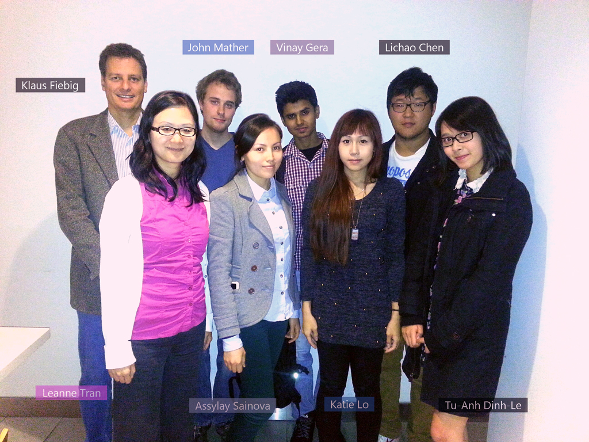

Ultrasound in Remote Maternal Health Care
Lichao Chen, Tu-Anh Dinh-Le, Vinay Gera, Katie Lo, John Mather, Assylay Sainova

Team Erie is composed of six members, including Lichao Chen, Tu-Anh Dinh-Le, Vinay Gera, Katie Lo, John Mather, and Assylay Sainova. Each of us has our own distinct set of skills, strengths, and weaknesses. Throughout the course of this project, we hope to improve our assets by expanding our skill set, improving on our existing strengths, and working together to overcome our weaknesses. As a team, we aim to come together in hopes of creating a project that we can be proud of, one that has a lasting impact on the world, and of course, one deserving of the coveted A+.
We will have regular meetings on Tuesday nights and during the tutorial section on Thursday on a weekly basis. If we feel that more meeting sessions are required, we will schedule additional times to meet up. Every team member is expected to arrive on time and prepared for each meeting. If any team member cannot attend a meeting for whatever reason, it is that individual’s responsibility to notify the rest of the team, and it is their duty to go through the material discussed during the meeting.
Outside of our meetings, we predominantly keep in touch through email and Facebook. As such, we expect each of our members to regularly check their email and Facebook for updates. Both of these should be checked at least twice a day, and responses should be provided within at most 24 hours.
During our meetings, we will distribute work amongst the team and decide when the work should be completed. Every member of the team is expected to complete their assigned tasks to the best of their ability by the deadline. If an individual feels that he or she will be unable to do so, that individual must discuss it with the remaining group members as soon as they can. Members should also try to keep the team informed with their process, and ask for assistance when it is needed.
{kind=link}